DDL 管家交互页面的桌面与手机截图，以及真实系统设计。点击图片可查看原始截图。
演示中的 AI 提取、QQ 授权、发送回执和任务执行为模拟；实际系统需在本机 WorkBuddy 中部署。
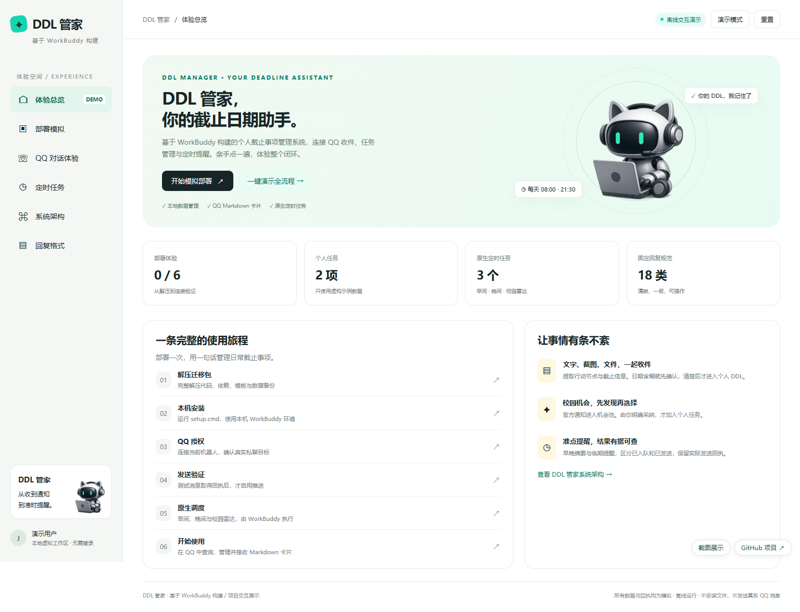
从通知收件到截止日期管理的完整演示入口。
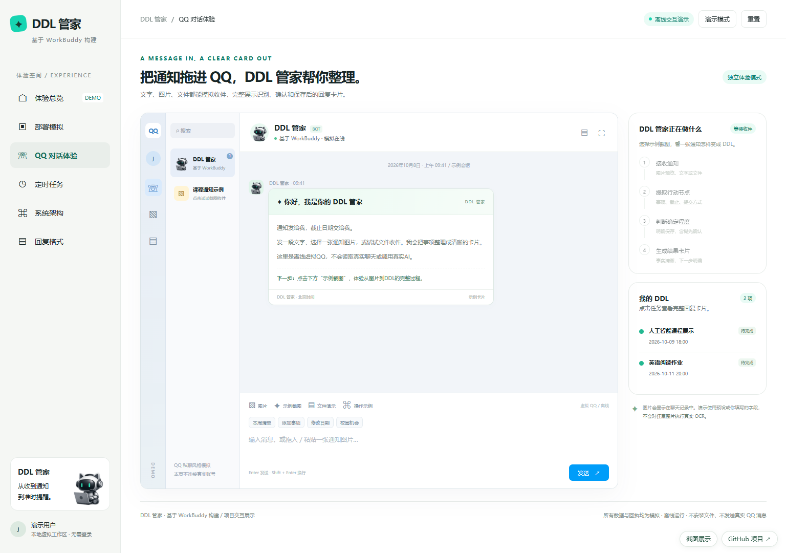
模拟 QQ 联系人、消息气泡和任务卡片。
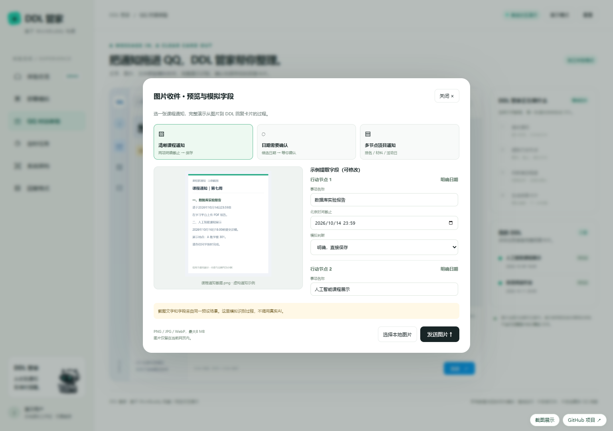
示例通知或本地图片预览；模拟提取字段可编辑。
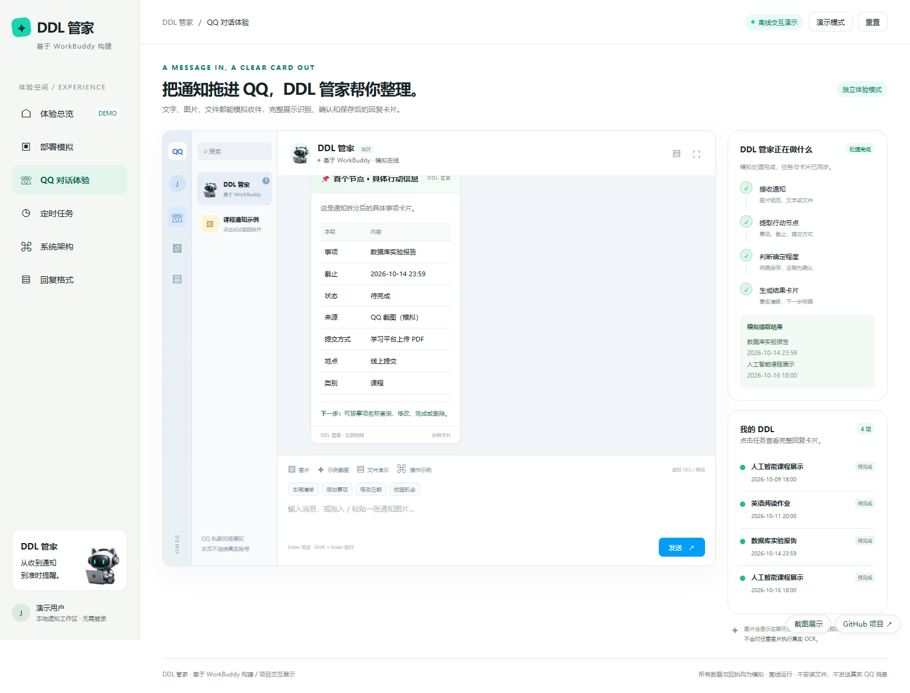
将通知中的多个截止节点拆为独立事项。
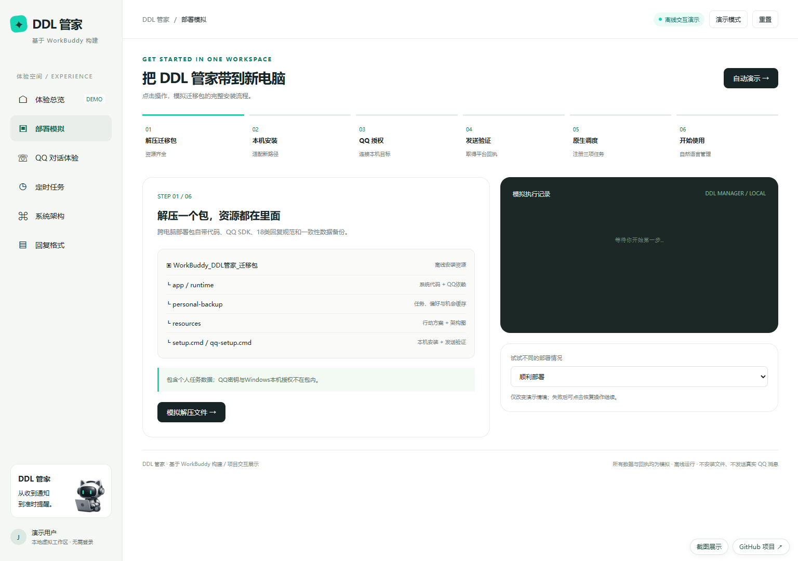
展示本机安装、QQ 连接与运行验证步骤。
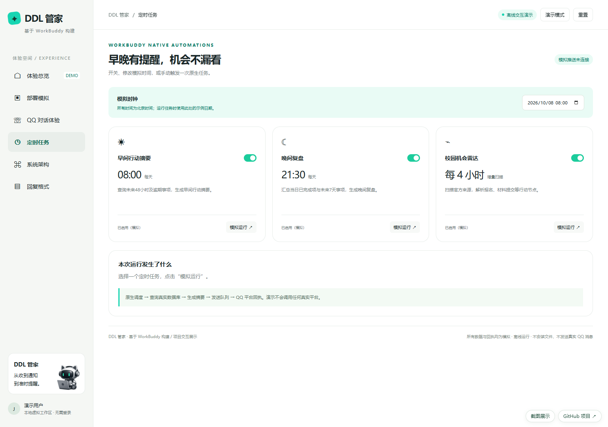
早间摘要、晚间复盘与校园雷达的模拟调度。
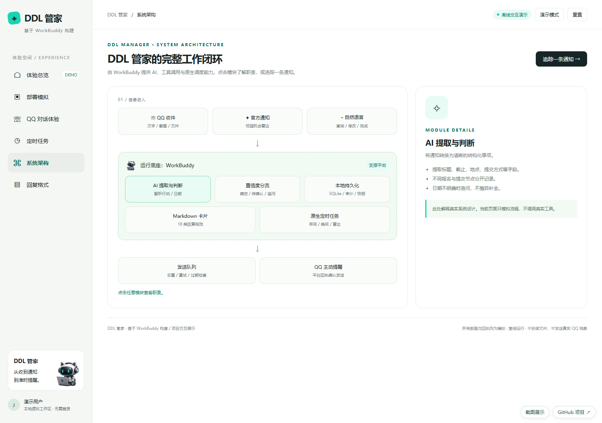
收件、持久化、机会池和提醒闭环。
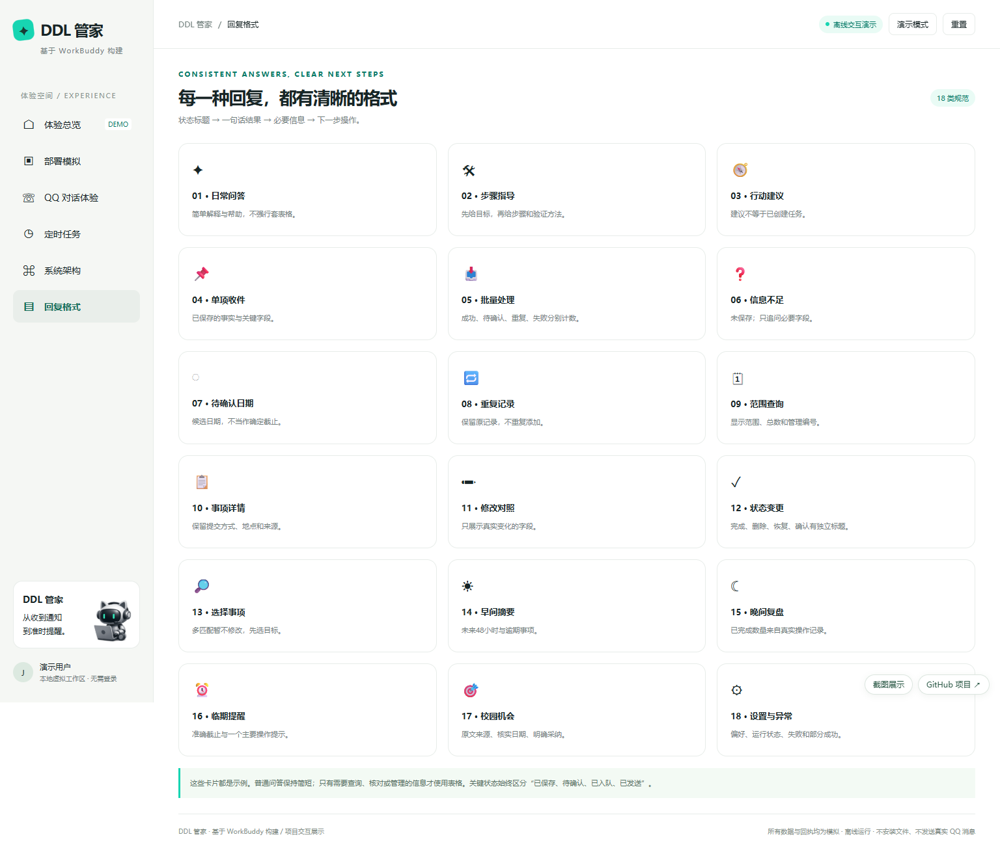
统一卡片模板与内容示例。
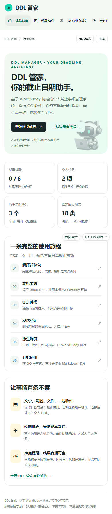
390px 手机视口。
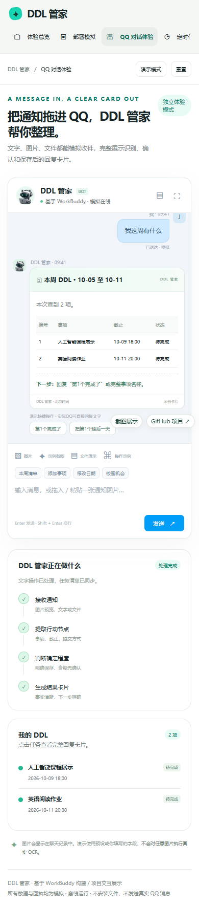
手机视口中的模拟对话和任务结果。
QQ 收件 → 智能抽取与校验 → SQLite 持久化 → WorkBuddy 原生定时任务 → QQ 提醒与回执。
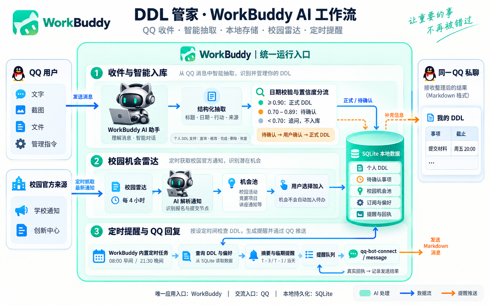